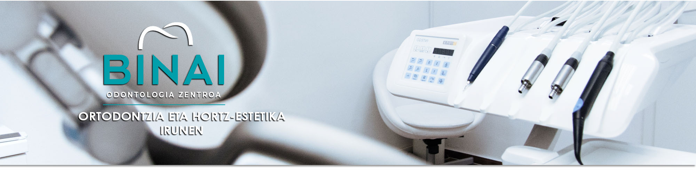
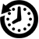

Dentista kualifikatuak Irunen
Binai hortz-klinikan zure hortzen tratamendurako irtenbiderik onenak aurkituko dituzu

Odontologia-zentro moderno batean kokatuta gaude, eta Binai hortz-klinikak abangoardiako teknologia du, hortz-osasunerako irtenbide eraginkorrenak eskaintzeko.
Zatoz guregana eta jakin ezazu Binai Hortz Klinika dela zure aho-osasunerako aukerarik onena Irunen.
943 612 831 / 685 757 042

clinicabinai@gmail.com

Ordutegia
Astelehenetik ostiralera 8:30 - 13:30 eta 15:00 - 20:00
Larunbatak 9:00 - 14:00
Jose Eguino, 2 - 1. A
(Elitxuko anbulatorioaren ondoan)
20302 - Irun (Gipuzkoa)

Hortz-klinika Irunen
Odontologo profesionalak
HORTZ-TRATAMENDUAK
• Hortz-inplanteak
• Hortz-estetika
• Ortodontzia
(Bracket - Invisalign)
• Hortz-protesien laborategia
• P.A.D.I. Osakidetza
(Haurren Hortzak Zaintzeko Programa)
KONTAKTU
(Elitxuko anbulatorioaren ondoan)
20302 Irun (Gipuzkoa)
© CLINICA DENTAL BINAI S.L. - Eskubide guztiak erreserbatuta